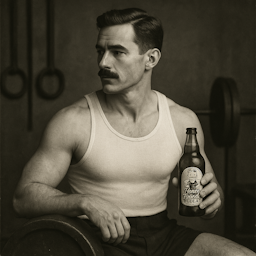

Dean & Eleanor at the radioactive bee farm

The Atomic Mills team, 1941

Family breakfast powered by Flappy Flakes

Dean Lockhart post-workout with Honey Thunder Cola
Makers of the World’s First Atomic Breakfast
Founded in 1940, in a universe where bears can fly, Atomic Mills took flight with one radical mission: win the war... with breakfast.
As Allied forces searched for an edge, visionary food engineer Dean Lockhart answered the call. Backed by a team of barely-certified scientists and a loose understanding of radiation, Lockhart pioneered nuclear-infused food products designed to supercharge soldiers with unmatched speed, strength, and spirit.
From the launch of Flappy Flakes Cereal to the sticky brilliance of Nukey Nectar, harvested from radioactive bees, Atomic Mills turned science into sustenance—and breakfast into a battleground.
Born on the battlefield, embraced at the breakfast table. And while the world keeps spinning, our mission stays the same:
To fuel every morning with sunshine, science, and a wholesome blast of atomic innovation.